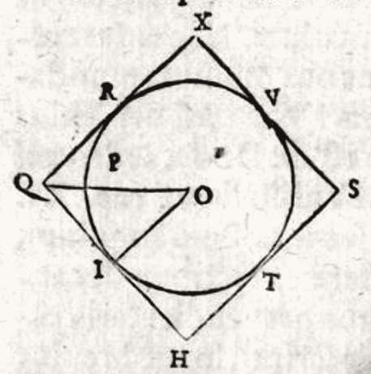

Chapter XVII: Mercury’s Inscribed Square in the Octahedron¶
Another warning concerning Mercury.
You will wonder the more at this: since I promised that I would inscribe the planets in the bodies themselves, why I did not inscribe Mercury in the Octahedron, but suffered it to range in a certain circle beyond the inscribable orb to the compass of the octahedral square. For above in Chapters XIII and XIV, instead of 577, the number of the inscribed orb, I used 707, the number of the circle inscribed in the square. I shall tell the reason. First, because its greater digression from the Sun could by no means endure such narrow prisons; secondly, because both the Octahedron among the bodies and the motion of Mercury among the planets have something peculiar and in common with one another. For in the Octahedron alone, when set upright upon an angle, does it come about that a square with straight sides shows a way for a larger circle than the inscribed orb is, to pass through the middle. This happens in no other body, however turned about; for always the sides will run transversely through the middle and block the way.


In this diagram the four outermost lines are the four perpendiculars of as many planes in the Octahedron. R, I, T, V are the centers of those planes, determining the compass of the inscribed orb (OP), of which you see here a great circle. If this orb be understood to revolve upon the points at X, H, the two angles of the figure, it will find at P, in the quadrant round about from the poles, a compass somewhat greater than OI or OP, the semidiameter of the orb—namely OQ. Its difference is PQ. And so great is the breadth of the circle which, running out beyond the orb like some horizon in an armillary sphere,
f. 0069 · p. 57can pass through the middle of the Octahedron. For Q and S are the midpoints of two sides, and therefore also nearest to the orb.
Just as if some ensouled planet were bidden to run through the middle of the Octahedron, and to observe the two angles as poles and the compass of the inscribed orb as its racecourse: by Hercules it were no wonder if, enticed by that width where no boundaries stood in its way throughout the whole circuit, it should sometimes swerve out of bounds, like Phaethon of old,
for a little while until it were driven back by the opposing side. What I have said in jest, astronomers affirm in earnest befalls Mercury. For whereas all the others in each revolution describe circles of the same compass (since as far as they depart on one side, so far do they approach the Sun on the opposite part of their path),
Mercury alone has obtained from astronomers that it is said to describe sometimes a greater, sometimes a smaller circle: and that it should possess this as its sole privilege. For they say that it approaches and recedes from the center of its orb O along the straight line Y Z, where the semidiameter O Y describes a far smaller circle than O Z.
For all the other inequalities it shares equally with the rest, and has exchanged none of them for this wandering out of its orb. And whereas the eccentricities of all the rest decrease, if not proportionally, yet in such a way that a lesser planet always has a lesser eccentricity, Mercury alone has a monstrous one—ten times that of Venus—though as an inferior planet even less was owed to it.
Wherefore, although I have not yet reconciled that private inequality with this difference of the circle from the orb, nor perhaps can it be reconciled to a hair’s breadth as it has been handed down by astronomers, nevertheless I do not doubt that the Creator looked to the prescription of this figure in assigning motions to Mercury.
Whereby both Astronomy and the teachings of Copernicus, and these very five bodies, seem to me ever more divine.
Let others, who will, seek also the causes of the remaining eccentricities each from its own body. For since neither have these wanderings been indulged by God to the several planets rashly and without cause, the investigation of these causes too is not to be despaired of.
Furthermore, let the variation of Mercury be fitted to the Octahedron; here
f. 0070 · p. 58one could proceed thus. The proportion of the eccentricity of ☿ to its mean distance from ☉ would be taken as certain, so that since in Copernicus the greatest distance (as you see in Table V, Chapter XV) is 488 and the least 231, the mean will therefore be 360 and the whole thickness 257. Now this thickness would be corrected proportionally, so that since the circle of the Octahedron grants no more than 474 for the number 488 of Copernicus, the thickness will therefore be 250 in this proportion, and the corrected mean distance 349. Now see what the orb in the Octahedron admits—namely 387. The difference, therefore, between 387, the highest of the orb, and 349, the mean, is 38, and its double 76 is the thickness of the orb after the manner of the rest—still greater indeed than that of Venus, yet not so monstrous. The remaining difference between the highest of the orb, 387, and the highest of the circle, 474—which is 87—is owed to Mercury’s peculiar wandering out of bounds. Let astronomers consider whether this argument (ἐπιχείρημα) is to be rejected, or reconciled with the supposed (ὑποθέτῳ) form of motions in ☿, or a new account of the motions established. For the wanderings of this star have not been so well explored that its orb has no need of correction.